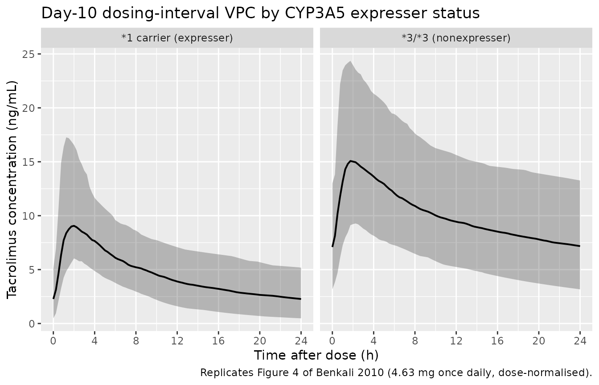

Tacrolimus (Benkali 2010)
Source:vignettes/articles/Benkali_2010_tacrolimus.Rmd
Benkali_2010_tacrolimus.RmdModel and source
- Citation: Benkali K, Rostaing L, Premaud A, Woillard JB, Saint-Marcoux F, Urien S, Kamar N, Marquet P, Rousseau A. Population pharmacokinetics and Bayesian estimation of tacrolimus exposure in renal transplant recipients on a new once-daily formulation. Clin Pharmacokinet. 2010;49(10):683-692.
- Description: Two-compartment population PK model with Erlang-distributed transit absorption (3 transit compartments) for once-daily extended-release oral tacrolimus (Advagraf) in stable adult renal transplant recipients more than 6 months post-transplant who were switched from twice-daily ciclosporin (Benkali 2010), with a multiplicative CYP3A5*1-carrier (expresser) effect on apparent clearance and combined additive + proportional residual error.
- Article: Clin Pharmacokinet 2010;49(10):683-692 (Adis Data; DOI not extracted from on-disk PDF).
Population
The model was developed from full 24-hour pharmacokinetic profiles in 41 stable adult renal transplant recipients enrolled at French centres in Limoges and Toulouse (Benkali 2010 Table I). All patients were more than 6 months post-transplantation and had been switched from twice-daily ciclosporin to once-daily extended-release oral tacrolimus (Advagraf), with concomitant mycophenolate mofetil and a median 2.5 mg / day prednisolone (range 0-10 mg). Median (range) age was 52 (28-77) years and body weight 68 (45-116) kg; 22 of 41 patients were female (53.7%). Twelve blood samples per patient were drawn within a single 24-hour dosing interval at predose and 0.33, 0.66, 1, 1.5, 2, 3, 4, 6, 9, 12, and 24 hours post-dose, yielding 492 tacrolimus concentrations quantified by validated LC-MS/MS. The CYP3A5 6986A>G (rs776746) genotype distribution was 1/1 = 1, 1/3 = 4, 3/3 = 36 (5 expressers, 36 nonexpressers); the once-daily dose was titrated to a target trough of 4-8 ng/mL, with the bootstrap-VPC mean dose 4.63 mg (Benkali 2010 Methods, p. 685 and Results, p. 687).
The same information is available programmatically via
readModelDb("Benkali_2010_tacrolimus")$population.
Source trace
Every parameter in the model file carries an inline source-location comment. The table below collects the entries in one place.
| Equation / parameter | Value | Source location |
|---|---|---|
lktr (Erlang transit rate ktr) |
3.3 1/h | Table II, “Final model obtained with the whole dataset” column, ktr row |
lvc (V1/F apparent central volume) |
486 L | Table II, whole-dataset column, V1/F row |
lcl (CL/F for CYP3A5 nonexpressers, theta1) |
19 L/h | Table II, whole-dataset column, CL/F theta1 row |
e_cyp3a5_expr_cl (multiplier 1 + theta2) |
2.15 | Table II, whole-dataset column, CL/F theta2 row (theta2 = 1.15) |
lkcp (k56 central -> peripheral rate constant) |
0.09 1/h | Table II, whole-dataset column, k56 row |
lkpc (k65 peripheral -> central rate constant) |
0.13 1/h | Table II, whole-dataset column, k65 row |
| IIV ktr (omega^2 = log(1 + 0.52^2) = 0.2393) | 52% CV | Table II, whole-dataset IIV column, ktr row |
| IIV V1/F (omega^2 = log(1 + 0.53^2) = 0.2475) | 53% CV | Table II, whole-dataset IIV column, V1/F row |
| IIV CL/F (omega^2 = log(1 + 0.35^2) = 0.1156) | 35% CV | Table II, whole-dataset IIV column, CL/F row |
| IIV k56 (omega^2 = log(1 + 0.54^2) = 0.2560) | 54% CV | Table II, whole-dataset IIV column, k56 row |
| Proportional residual error | 9% | Table II, whole-dataset column, “Proportional error” row |
| Additive residual error | 0.7 ng/mL | Table II, whole-dataset column, “Additive error” row |
CL/F covariate equation: theta1 * (1 + theta2)^cyp
|
– | Eq. 4, p. 689 |
| Erlang absorption with n = 3 transit compartments | – | Methods (Population Pharmacokinetic Analysis, p. 685) and Results (Population Pharmacokinetics, p. 688) |
| Two-compartment disposition with first-order elimination | – | Discussion, p. 689 |
The paper estimated the central <-> peripheral exchange as rate constants (k56 = central -> peripheral, k65 = peripheral -> central) rather than as inter-compartmental clearance Q/F and peripheral volume V2/F. The implied secondary parameters are Q/F = k56 * V1/F = 0.09 * 486 = 43.74 L/h and V2/F = Q/F / k65 = 43.74 / 0.13 = 336.5 L.
Virtual cohort
The published dataset is not openly available, so the virtual cohort below mirrors the demographics and CYP3A5 genotype distribution in Benkali 2010 Table I. Two CYP3A5 strata are simulated independently (expressers and nonexpressers) so the VPC reproduces the genotype-stratified envelopes shown in Figure 4 of the source paper.
set.seed(20100101)
n_per_strat <- 200L
make_cohort <- function(n, cyp3a5_expr, label, id_offset = 0L) {
tibble(
id = id_offset + seq_len(n),
CYP3A5_EXPR = cyp3a5_expr,
cohort = label
)
}
demo <- bind_rows(
make_cohort(n_per_strat, cyp3a5_expr = 0L,
label = "*3/*3 (nonexpresser)", id_offset = 0L),
make_cohort(n_per_strat, cyp3a5_expr = 1L,
label = "*1 carrier (expresser)", id_offset = n_per_strat)
)
stopifnot(!anyDuplicated(demo$id))Simulation
Patients in Benkali 2010 had been on once-daily tacrolimus for more than 6 months, so the analysed 24-hour profile is a steady-state interval. The simulation below builds 10 days of once-daily 4.63 mg oral tacrolimus (the mean dose used by the paper for VPC normalisation) and analyses the day-10 dosing interval.
build_events <- function(demo, dose_mg, sim_hours = 240) {
doses <- demo |>
mutate(amt = dose_mg, evid = 1L, cmt = "depot",
ii = 24, addl = 9L, time = 0) |>
select(id, time, amt, evid, cmt, ii, addl, cohort, CYP3A5_EXPR)
obs_times <- sort(unique(c(seq(0, 24, by = 0.25),
seq(216, sim_hours, by = 0.25))))
obs <- demo |>
select(id, cohort, CYP3A5_EXPR) |>
tidyr::crossing(time = obs_times) |>
mutate(amt = NA_real_, evid = 0L, cmt = NA_character_,
ii = NA_real_, addl = NA_integer_)
bind_rows(doses, obs) |> arrange(id, time, desc(evid))
}
events_463 <- build_events(demo, dose_mg = 4.63)
mod <- rxode2::rxode2(readModelDb("Benkali_2010_tacrolimus"))
#> ℹ parameter labels from comments will be replaced by 'label()'
sim_463 <- rxode2::rxSolve(mod, events = events_463,
keep = c("cohort"),
nStud = 1) |> as.data.frame()
mod_typical <- mod |> rxode2::zeroRe()
sim_typ_463 <- rxode2::rxSolve(mod_typical, events = events_463,
keep = c("cohort")) |> as.data.frame()
#> ℹ omega/sigma items treated as zero: 'etalktr', 'etalvc', 'etalcl', 'etalkcp'
#> Warning: multi-subject simulation without without 'omega'Replicate published figures
Figure 4 – VPC by CYP3A5 genotype, dose-normalised to 4.63 mg
Benkali 2010 Figure 4 shows a visual predictive check of the final model stratified by CYP3A5 expresser status, with 5th, 50th, and 95th percentiles from 1000 simulations of 41 patients dose-normalised to 4.63 mg. The chunk below reproduces the same envelope from the day-10 dosing interval.
last_dose_time <- 9 * 24 # the 10th dose lands at t = 216 h
fig4_data <- sim_463 |>
filter(time >= last_dose_time, time <= last_dose_time + 24) |>
mutate(time_after_dose = time - last_dose_time)
fig4 <- fig4_data |>
group_by(cohort, time_after_dose) |>
summarise(Q05 = quantile(Cc, 0.05),
Q50 = quantile(Cc, 0.50),
Q95 = quantile(Cc, 0.95),
.groups = "drop")
ggplot(fig4, aes(time_after_dose, Q50)) +
geom_ribbon(aes(ymin = Q05, ymax = Q95), alpha = 0.3) +
geom_line(linewidth = 0.7) +
facet_wrap(~ cohort) +
scale_x_continuous(breaks = seq(0, 24, by = 4)) +
labs(x = "Time after dose (h)",
y = "Tacrolimus concentration (ng/mL)",
title = "Day-10 dosing-interval VPC by CYP3A5 expresser status",
caption = "Replicates Figure 4 of Benkali 2010 (4.63 mg once daily, dose-normalised).")
Replicates Figure 4 of Benkali 2010: simulated whole-blood tacrolimus concentration vs. time after the day-10 4.63 mg once-daily dose, stratified by CYP3A5 expresser status. Ribbons show the 5th-95th percentile band; line is the median.
PKNCA validation
A standard NCA over the day-10 dosing interval gives Cmax, Tmax, and AUC0-24 by CYP3A5 stratum.
nca_window <- sim_463 |>
filter(time >= last_dose_time, time <= last_dose_time + 24) |>
mutate(time_after_dose = time - last_dose_time) |>
select(id, time = time_after_dose, Cc, cohort)
dose_df <- demo |>
mutate(time = 0, amt = 4.63) |>
select(id, time, amt, cohort)
conc_obj <- PKNCA::PKNCAconc(nca_window, Cc ~ time | cohort + id)
dose_obj <- PKNCA::PKNCAdose(dose_df, amt ~ time | cohort + id)
intervals <- data.frame(start = 0, end = 24,
cmax = TRUE, tmax = TRUE,
auclast = TRUE, cmin = TRUE, ctrough = TRUE)
nca_data <- PKNCA::PKNCAdata(conc_obj, dose_obj, intervals = intervals)
nca_res <- suppressMessages(suppressWarnings(PKNCA::pk.nca(nca_data)))
nca_summary <- summary(nca_res)
knitr::kable(nca_summary,
caption = "Day-10 NCA on the simulated cohort (steady-state 24 h interval, 4.63 mg once daily, by CYP3A5 stratum).")| start | end | cohort | N | auclast | cmax | cmin | tmax | ctrough |
|---|---|---|---|---|---|---|---|---|
| 0 | 24 | *1 carrier (expresser) | 200 | 111 [35.0] | 10.2 [31.5] | 1.92 [95.5] | 1.75 [0.750, 5.50] | 1.93 [95.8] |
| 0 | 24 | 3/3 (nonexpresser) | 200 | 231 [31.6] | 14.8 [29.4] | 6.43 [50.7] | 1.75 [0.750, 6.50] | 6.50 [51.6] |
Comparison against published exposure metrics
Benkali 2010 reports dose-normalised summary statistics for the full 24-hour profile (Results, p. 687): “high interindividual CVs of the dose-normalized AUC24 (47%), C0 (45%), Cmax (45%) and time to reach the Cmax (tmax; 46%).” The paper does not report a per-genotype mean Cmax / AUC24 table; the comparison below pairs the simulated cohort %CV against the reported %CV across the pooled cohort, and the typical-value per-genotype AUC24 against the steady-state expectation Dose / (CL/F).
# Pull the per-subject NCA results out of nca_res and compute pooled %CV.
nca_long <- as.data.frame(nca_res$result) |>
filter(PPTESTCD %in% c("auclast", "cmax", "cmin", "tmax"))
pooled_cv <- nca_long |>
group_by(PPTESTCD) |>
summarise(simulated_CV_pct = round(sd(PPORRES, na.rm = TRUE) /
mean(PPORRES, na.rm = TRUE) * 100, 1),
.groups = "drop")
paper_cv <- tibble::tibble(
PPTESTCD = c("auclast", "cmax", "cmin", "tmax"),
paper_label = c("AUC24", "Cmax", "C0 (Cmin / trough)", "tmax"),
paper_CV_pct_pooled = c(47, 45, 45, 46) # Results, p. 687
)
cv_table <- paper_cv |> inner_join(pooled_cv, by = "PPTESTCD")
knitr::kable(cv_table,
caption = "Pooled-cohort %CV on dose-normalised exposure metrics: simulated (this vignette, n = 400 across both strata) vs. Benkali 2010 reported value (Results, p. 687).")| PPTESTCD | paper_label | paper_CV_pct_pooled | simulated_CV_pct |
|---|---|---|---|
| auclast | AUC24 | 47 | 48.1 |
| cmax | Cmax | 45 | 35.8 |
| cmin | C0 (Cmin / trough) | 45 | 70.9 |
| tmax | tmax | 46 | 41.9 |
# Typical-value (zeroRe) AUC24 computed via trapezoid; should match Dose/(CL/F).
typical_auc24 <- sim_typ_463 |>
filter(time >= last_dose_time, time <= last_dose_time + 24) |>
group_by(cohort) |>
arrange(time, .by_group = TRUE) |>
summarise(simulated_auc24 = sum(diff(time) * (head(Cc, -1) + tail(Cc, -1)) / 2),
.groups = "drop")
expected_auc24 <- tibble::tibble(
cohort = c("*3/*3 (nonexpresser)", "*1 carrier (expresser)"),
cl_per_h = c(19, 19 * 2.15),
expected_auc24 = 4.63 * 1000 / c(19, 19 * 2.15) # mg / (L/h) -> ng*h/mL
)
knitr::kable(typical_auc24 |>
inner_join(expected_auc24, by = "cohort") |>
select(cohort, simulated_auc24, expected_auc24),
caption = "Typical-value steady-state AUC24: simulated trapezoid (no IIV / no residual) vs. analytical Dose / (CL/F).")| cohort | simulated_auc24 | expected_auc24 |
|---|---|---|
| *1 carrier (expresser) | 113.3388 | 113.3415 |
| 3/3 (nonexpresser) | 242.3377 | 243.6842 |
The simulated typical-value AUC24 should equal Dose / (CL/F) at steady state within numerical tolerance, confirming the structural mass-balance: the nonexpresser stratum should give 4630 / 19 ~= 244 ngh/mL and the expresser stratum 4630 / 40.85 ~= 113 ngh/mL (a roughly 2.15-fold difference that matches the 2-fold expresser / nonexpresser ratio reported in the Abstract and Discussion).
Assumptions and deviations
- Steady-state initialisation. The paper analyses a single 24-hour profile in patients on chronic once-daily dosing for more than 6 months. The simulation here approximates that with 10 days of once-daily 4.63 mg dosing and analyses the day-10 interval; this is sufficient to reach steady state given the typical apparent half-life implied by the published parameters (~17 h for nonexpressers, ~8 h for expressers).
-
Inter-occasion variability is not modelled. Benkali
2010 estimated only IIV (between-subject variability) and did not
partition variability into IOV components, so no additional
eta*_oc<k>slot is needed. -
No covariates other than CYP3A5 expresser status.
Body weight, age, sex, haematocrit, haemoglobin, serum creatinine, and
prednisolone co-medication were each tested at the screening stage but
did not survive backward elimination (Benkali 2010 Results, p. 689). The
model file therefore registers only
CYP3A5_EXPR, matching the published final model. - Demographic distributions are not simulated. Because the final model has no continuous covariates, the virtual cohort needs only a CYP3A5 expresser indicator per subject. The simulated body weight, age, sex, and assay-related covariates are not used.
-
Rate-constant parameterisation preserved. Benkali
2010 estimated the central <-> peripheral exchange as rate
constants (k56 / k65) rather than as Q/F and V2/F. The model file
reproduces the published rate-constant form to preserve the published
IIV magnitude on k56 (54% CV); the implied secondary parameters Q/F =
43.74 L/h and V2/F = 336.5 L are reported above for reference but are
not separately parameterised. This is a documented deviation from the
canonical
lq/lvpini() naming used elsewhere in nlmixr2lib; it follows the precedent set byKovalenko_2020_dupilumab, which similarly carrieslkcp/Mpcinstead oflq/lvpbecause the published model uses rate-constant parameterisation. -
Erlang chain implemented as depot + transit1 +
transit2. Benkali 2010 identifies n = 3 transit compartments
(Methods and Table II); the implementation uses
depotas the first transit-chain element and addstransit1+transit2for the remaining two, with all three transitions driven by the samektr. This matches the n = 3 Erlang ADVAN5 SS5 parameterisation that the source paper used in NONMEM and gives the same three-stage convolution. -
DOI not extracted from on-disk PDF. The article PDF
on disk does not print a DOI; the citation in the model file is by
journal / volume / issue / page number only. NEWS.md follows the
precedent set by
Bista_2015_fentanyl(“manuscript, journal/DOI not on disk”). - Vignette uses 200 subjects per CYP3A5 stratum. This is small enough to render the vignette in well under 5 minutes (the pkgdown gate) but large enough to give stable percentiles for the VPC and pooled %CV statistics. Benkali 2010 used 1000 simulated populations of 41 subjects.